Bild und Wort
Bild ansehen, passendes Wort wählen und anhören.
🌐 Internet nötig · 🔓 ohne Anmeldung · 🔊 Vorlesen optional · keine Datenspeicherung
Diese Sammlung bündelt digitale Rätsel, Escape-Rooms, Lesegeschichten und kleine Lernspiele für verschiedene Altersgruppen und Schwierigkeitsgrade. Sie eignet sich für Unterricht, Vertretungsstunden, Projektphasen und Freizeit.
Sechs Rätsel mit großen Bildern, Vorlesefunktion und sofortiger Rückmeldung. Sie laufen direkt im Browser, ohne Anmeldung und ohne Datenspeicherung.
Bild ansehen, passendes Wort wählen und anhören.
🌐 Internet nötig · 🔓 ohne Anmeldung · 🔊 Vorlesen optional · keine Datenspeicherung
Den richtigen Artikel finden, mit Farben für der, die und das.
🌐 Internet nötig · 🔓 ohne Anmeldung · 🔊 Vorlesen optional · keine Datenspeicherung
Silben in die richtige Reihenfolge bringen.
🌐 Internet nötig · 🔓 ohne Anmeldung · 🔊 Vorlesen optional · keine Datenspeicherung
Buchstaben ordnen, bis das Wort zum Bild passt.
🌐 Internet nötig · 🔓 ohne Anmeldung · 🔊 Vorlesen optional · keine Datenspeicherung
Oberbegriffe erkennen und das falsche Bild finden.
🌐 Internet nötig · 🔓 ohne Anmeldung · 🔊 Vorlesen optional · keine Datenspeicherung
Aus zwei Bildern ein neues Wort bilden.
🌐 Internet nötig · 🔓 ohne Anmeldung · 🔊 Vorlesen optional · keine Datenspeicherung
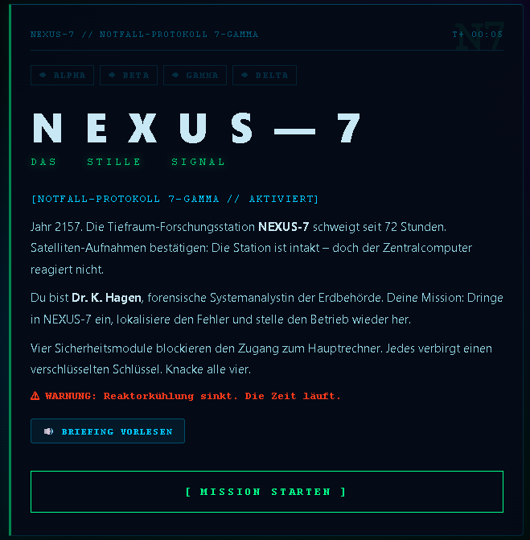
Eine verlassene Raumstation sendet ihr letztes Signal. Vier Systemmodule müssen entschlüsselt werden: Kommunikationsarray, Personalakten, Kühlsystem und Datenkern.
🌐 Internet nötig · 🔓 ohne Anmeldung · 🔊 Ton und Vorlesen, Kopfhörer empfohlen
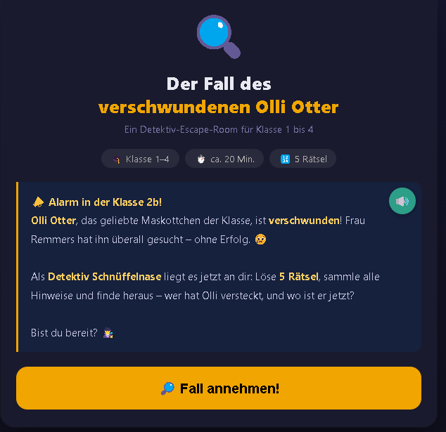
Frau Remmers sucht das Klassenmaskottchen Olli Otter. In fünf Rätseln sammeln Kinder Hinweise und lösen den Fall Schritt für Schritt.
🌐 Internet nötig · 🔓 ohne Anmeldung · 🔊 Vorlesefunktion, Kopfhörer empfohlen
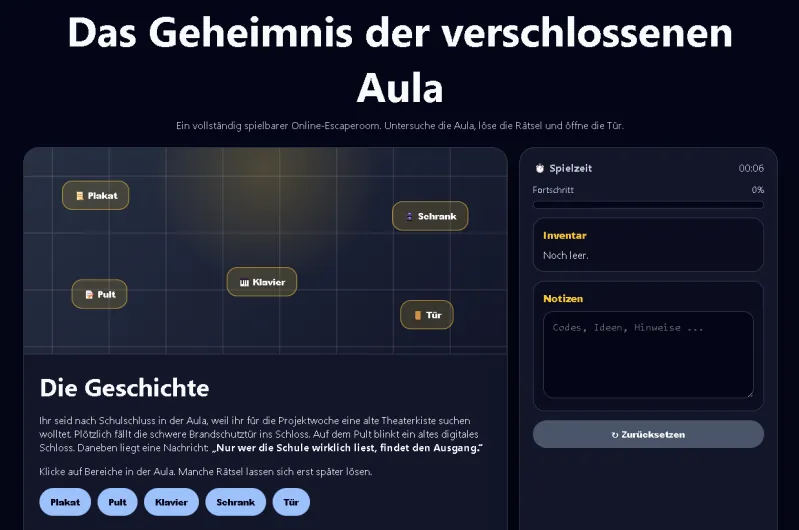
Nach Schulschluss ist die Aula verschlossen. Gegenstände untersuchen, Hinweise sammeln und das digitale Schloss öffnen.
🌐 Internet nötig · 🔓 ohne Anmeldung · 🔇 kein Ton nötig
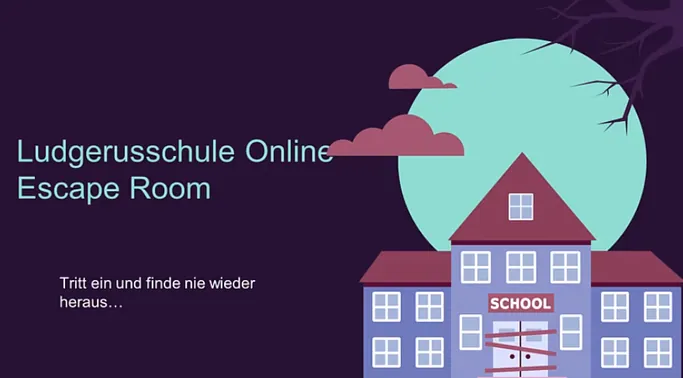
Ein schaurig-schöner Online-Escape-Room mit Rätsel- und Gruselatmosphäre.
🌐 Internet nötig · 🔓 ohne Anmeldung · Plattform Lumi
Emily Fischer ist verschwunden. Hinweise in Zimmer, Zeitungsartikel, Bilderwand und Schreibtisch helfen, ihren Standort zu bestimmen.
🌐 Internet nötig · 🔓 ohne Anmeldung · Plattform Lumi
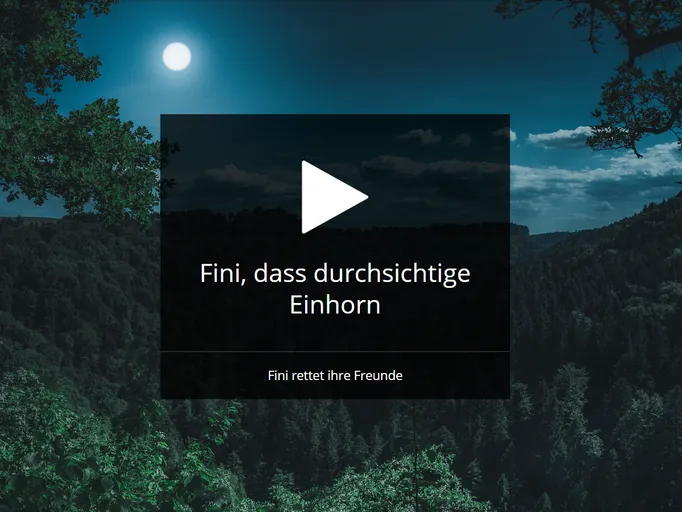
Fini findet ihre Freunde im Wald nicht mehr. Sie scheinen verschwunden zu sein. Eine ruhige Fantasy-Rätselgeschichte.
🌐 Internet nötig · 🔓 ohne Anmeldung · Plattform Lumi
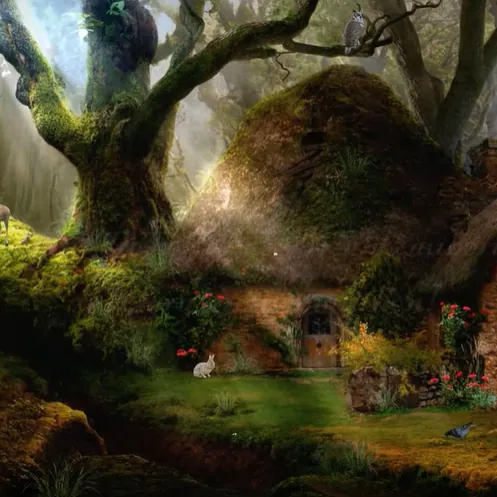
Elara Sonnenglühen muss ihren bedrohten Wald retten. Eine EduBreakout-Rätselreihe rund um Pflanzen, Wald und Magie.
🌐 Internet nötig · 🔓 ohne Anmeldung · Plattform Lumi
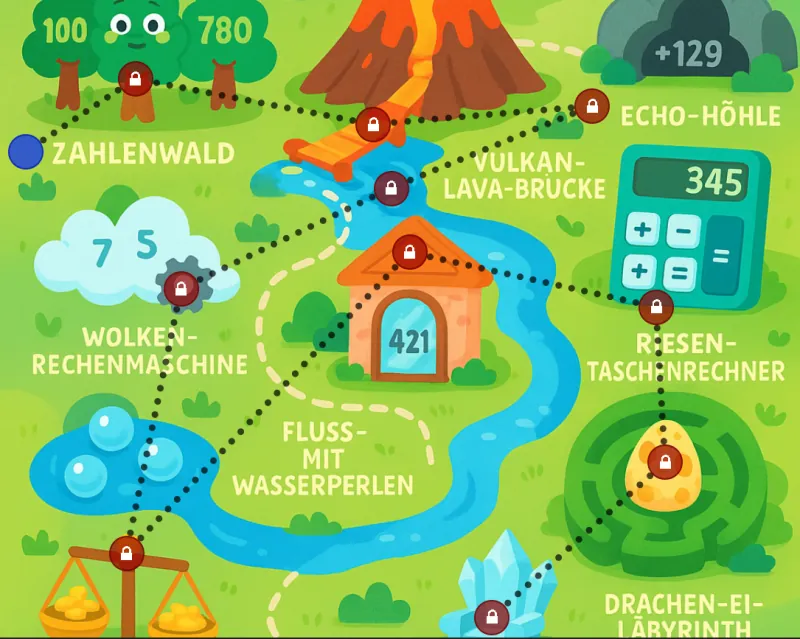
Der Zauberer Arithmos braucht Hilfe. Der magische Rechenkristall ist zerbrochen, seine Splitter liegen auf der Zahleninsel.
🌐 Internet nötig · 🔓 ohne Anmeldung · Plattform Lumi
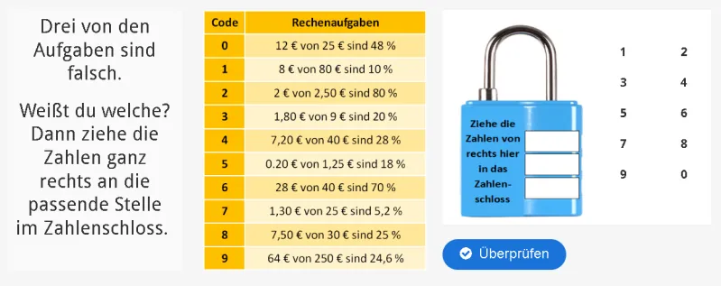
Drei Aufgaben sind falsch. Die passenden Zahlen werden in das Zahlenschloss gezogen.
🌐 Internet nötig · 🔓 ohne Anmeldung · Plattform Lumi
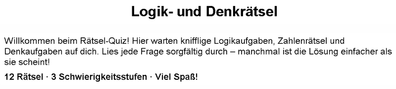
Knifflige Logikaufgaben, Zahlenrätsel und Denkaufgaben. Gut geeignet für kurze Knobelphasen im Unterricht.
🌐 Internet nötig · 🔓 ohne Anmeldung · Plattform Lumi
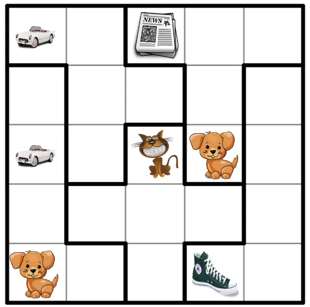
Jedes umrandete Fünferfeld muss alle fünf Bilder enthalten. Gleiche Bilder dürfen nicht horizontal, vertikal oder diagonal aneinander grenzen.
🌐 Internet nötig · 🔓 ohne Anmeldung · Plattform Lumi
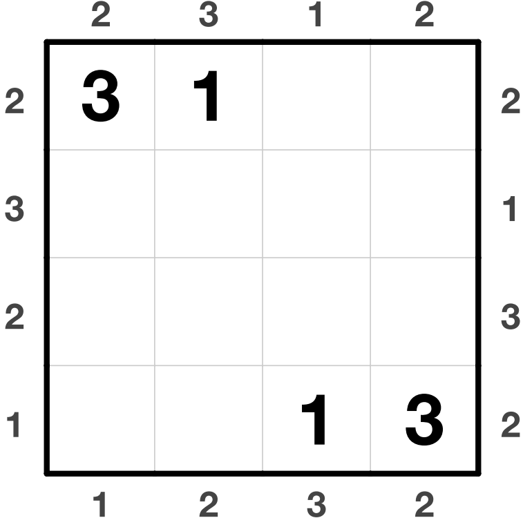
Das Raster wird so ergänzt, dass jede Zeile und Spalte die Zahlen 1 bis 4 enthält. Die Randhinweise zeigen, wie viele Wolkenkratzer sichtbar sind.
🌐 Internet nötig · 🔓 ohne Anmeldung · Plattform Lumi
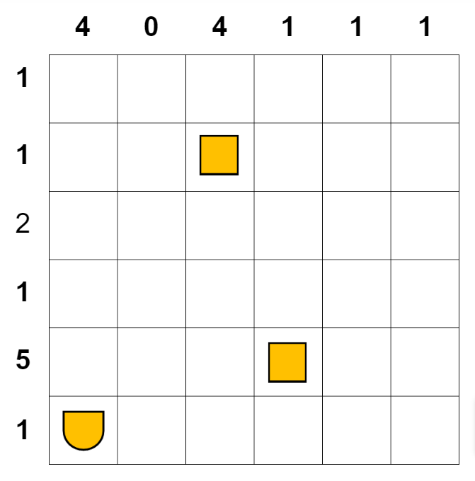
Die Zahlen zeigen, wie viele Schiffsteile in Zeilen und Spalten liegen. Schiffe berühren sich nicht, auch nicht diagonal.
🌐 Internet nötig · 🔓 ohne Anmeldung · Plattform Lumi
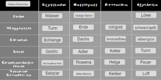
Ein kurzes Zuordnungsrätsel mit Begriffen aus einer Zauberwelt.
🌐 Internet nötig · 🔓 ohne Anmeldung · Plattform Lumi
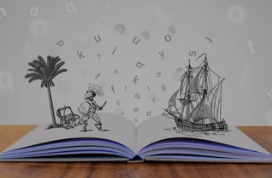
Ein Piratenrätsel mit Bildern, Begriffen und kombinatorischem Denken.
🌐 Internet nötig · 🔓 ohne Anmeldung · Plattform Lumi
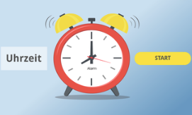
Ein kleines Rätsel zum Erkennen und Zuordnen von Uhrzeiten.
🌐 Internet nötig · 🔓 ohne Anmeldung · Plattform Lumi
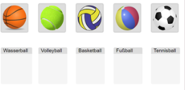
Verschiedene Bälle werden den passenden Sportarten oder Begriffen zugeordnet.
🌐 Internet nötig · 🔓 ohne Anmeldung · Plattform Lumi
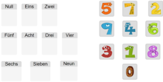
Zahlen und Zahlwörter werden einander zugeordnet.
🌐 Internet nötig · 🔓 ohne Anmeldung · Plattform Lumi
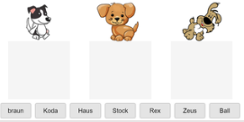
Ein Zuordnungsrätsel mit Hunden, Namen und Begriffen.
🌐 Internet nötig · 🔓 ohne Anmeldung · Plattform Lumi
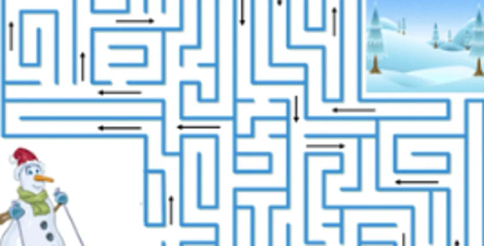
Ein Labyrinthrätsel zum genauen Hinschauen und Verfolgen von Wegen.
🌐 Internet nötig · 🔓 ohne Anmeldung · Plattform Lumi
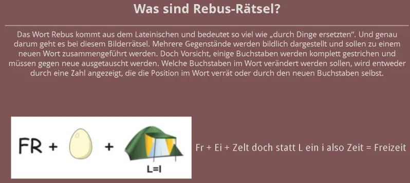
Bilder, Buchstaben und kleine Veränderungen werden zu neuen Wörtern kombiniert.
🌐 Internet nötig · 🔓 ohne Anmeldung · Plattform Lumi
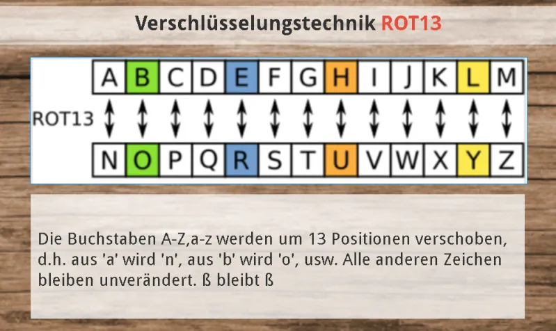
Buchstaben werden um 13 Positionen verschoben. Ein Einstieg in einfache Verschlüsselung.
🌐 Internet nötig · 🔓 ohne Anmeldung · Plattform Lumi
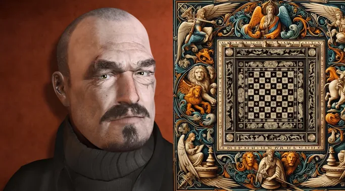
Eine kulturgeschichtliche Reise durch das 20. Jahrhundert. Der EduBreakout verbindet Schachgeschichte mit historischen Zeitereignissen.
🌐 Internet nötig · 🔓 ohne Anmeldung · Plattform Lumi
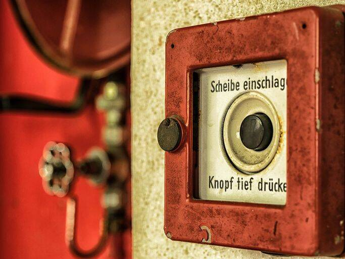
Wie melde ich ein Feuer? Das Rätsel erklärt die fünf W-Fragen für einen Notruf.
🌐 Internet nötig · 🔓 ohne Anmeldung · Plattform Lumi